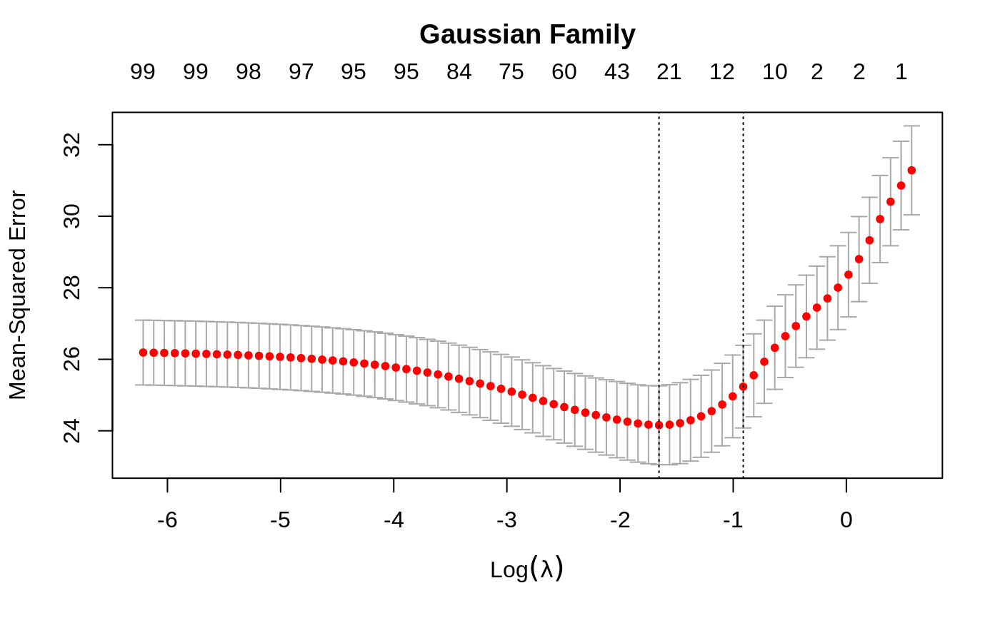
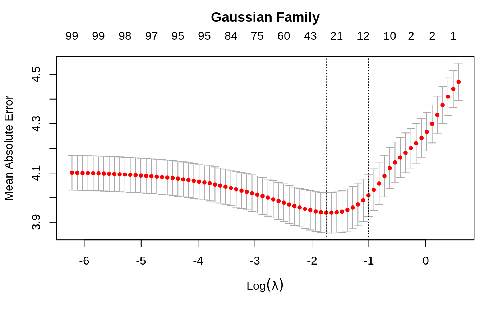
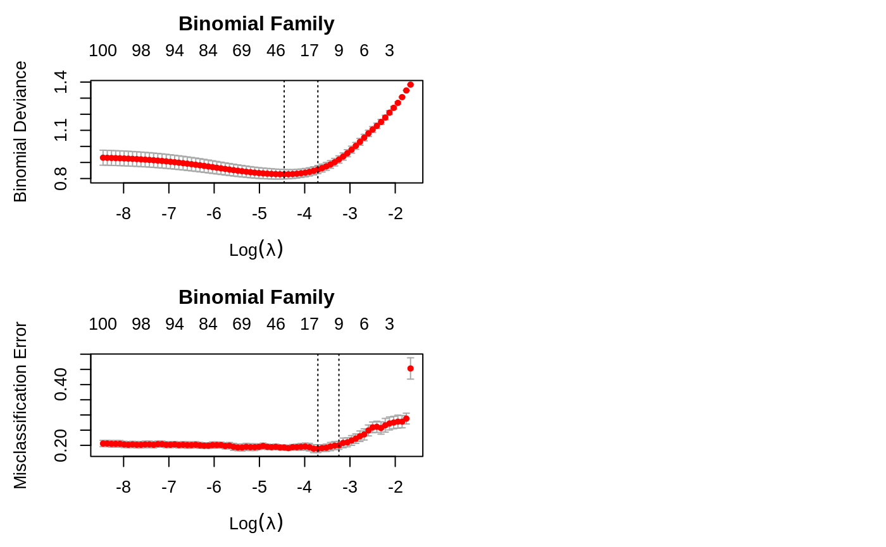

cv.glmnet.RdDoes k-fold cross-validation for glmnet, produces a plot, and returns a
value for lambda (and gamma if relax=TRUE)
cv.glmnet(x, y, weights = NULL, offset = NULL, lambda = NULL, type.measure = c("default", "mse", "deviance", "class", "auc", "mae", "C"), nfolds = 10, foldid = NULL, alignment = c("lambda", "fraction"), grouped = TRUE, keep = FALSE, parallel = FALSE, gamma = c(0, 0.25, 0.5, 0.75, 1), relax = FALSE, trace.it = 0, ...)
| x |
|
|---|---|
| y | response |
| weights | Observation weights; defaults to 1 per observation |
| offset | Offset vector (matrix) as in |
| lambda | Optional user-supplied lambda sequence; default is
|
| type.measure | loss to use for cross-validation. Currently five
options, not all available for all models. The default is
|
| nfolds | number of folds - default is 10. Although |
| foldid | an optional vector of values between 1 and |
| alignment | This is an experimental argument, designed to fix the
problems users were having with CV, with possible values |
| grouped | This is an experimental argument, with default |
| keep | If |
| parallel | If |
| gamma | The values of the parameter for mixing the relaxed fit with the
regularized fit, between 0 and 1; default is |
| relax | If |
| trace.it | If |
| ... | Other arguments that can be passed to |
an object of class "cv.glmnet" is returned, which is a list
with the ingredients of the cross-validation fit. If the object was created
with relax=TRUE then this class has a prefix class of
"cv.relaxed".
the values of lambda used in the
fits.
The mean cross-validated error - a vector of length
length(lambda).
estimate of standard error of
cvm.
upper curve = cvm+cvsd.
lower
curve = cvm-cvsd.
number of non-zero coefficients at
each lambda.
a text string indicating type of measure (for plotting purposes).
a fitted glmnet object for the full data.
value of lambda that gives minimum
cvm.
largest value of lambda such that
error is within 1 standard error of the minimum.
if
keep=TRUE, this is the array of prevalidated fits. Some entries can
be NA, if that and subsequent values of lambda are not reached
for that fold
if keep=TRUE, the fold assignments used
if relax=TRUE, this additional item has the CV info
for each of the mixed fits. In particular it also selects lambda,
gamma pairs corresponding to the 1SE rule, as well as the minimum error.
The function runs glmnet nfolds+1 times; the first to get the
lambda sequence, and then the remainder to compute the fit with each
of the folds omitted. The error is accumulated, and the average error and
standard deviation over the folds is computed. Note that cv.glmnet
does NOT search for values for alpha. A specific value should be
supplied, else alpha=1 is assumed by default. If users would like to
cross-validate alpha as well, they should call cv.glmnet with
a pre-computed vector foldid, and then use this same fold vector in
separate calls to cv.glmnet with different values of alpha.
Note also that the results of cv.glmnet are random, since the folds
are selected at random. Users can reduce this randomness by running
cv.glmnet many times, and averaging the error curves.
If relax=TRUE then the values of gamma are used to mix the
fits. If \(\eta\) is the fit for lasso/elastic net, and \(\eta_R\) is
the relaxed fit (with unpenalized coefficients), then a relaxed fit mixed by
\(\gamma\) is $$\eta(\gamma)=(1-\gamma)\eta_R+\gamma\eta$$. There is
practically no extra cost for having a lot of values for gamma.
However, 5 seems sufficient for most purposes. CV then selects both
gamma and lambda.
Friedman, J., Hastie, T. and Tibshirani, R. (2008)
Regularization Paths for Generalized Linear Models via Coordinate
Descent, https://web.stanford.edu/~hastie/Papers/glmnet.pdf
Journal of Statistical Software, Vol. 33(1), 1-22 Feb 2010
https://www.jstatsoft.org/v33/i01/
Simon, N., Friedman, J., Hastie,
T., Tibshirani, R. (2011) Regularization Paths for Cox's Proportional
Hazards Model via Coordinate Descent, Journal of Statistical Software, Vol.
39(5) 1-13
https://www.jstatsoft.org/v39/i05/
glmnet and plot, predict, and coef
methods for "cv.glmnet" and "cv.relaxed" objects.
set.seed(1010) n = 1000 p = 100 nzc = trunc(p/10) x = matrix(rnorm(n * p), n, p) beta = rnorm(nzc) fx = x[, seq(nzc)] %*% beta eps = rnorm(n) * 5 y = drop(fx + eps) px = exp(fx) px = px/(1 + px) ly = rbinom(n = length(px), prob = px, size = 1) set.seed(1011) cvob1 = cv.glmnet(x, y) plot(cvob1)coef(cvob1)#> 101 x 1 sparse Matrix of class "dgCMatrix" #> 1 #> (Intercept) -0.1162737 #> V1 -0.2171531 #> V2 0.3237422 #> V3 . #> V4 -0.2190339 #> V5 -0.1856601 #> V6 0.2530652 #> V7 0.1874832 #> V8 -1.3574323 #> V9 1.0162046 #> V10 0.1558299 #> V11 . #> V12 . #> V13 . #> V14 . #> V15 . #> V16 . #> V17 . #> V18 . #> V19 . #> V20 . #> V21 . #> V22 . #> V23 . #> V24 . #> V25 . #> V26 . #> V27 . #> V28 . #> V29 . #> V30 . #> V31 . #> V32 . #> V33 . #> V34 . #> V35 . #> V36 . #> V37 . #> V38 . #> V39 . #> V40 . #> V41 . #> V42 . #> V43 . #> V44 . #> V45 . #> V46 . #> V47 . #> V48 . #> V49 . #> V50 . #> V51 . #> V52 . #> V53 . #> V54 . #> V55 . #> V56 . #> V57 . #> V58 . #> V59 . #> V60 . #> V61 . #> V62 . #> V63 . #> V64 . #> V65 . #> V66 . #> V67 . #> V68 . #> V69 . #> V70 . #> V71 . #> V72 . #> V73 . #> V74 . #> V75 -0.1420966 #> V76 . #> V77 . #> V78 . #> V79 . #> V80 . #> V81 . #> V82 . #> V83 . #> V84 . #> V85 . #> V86 . #> V87 . #> V88 . #> V89 . #> V90 . #> V91 . #> V92 . #> V93 . #> V94 . #> V95 . #> V96 . #> V97 . #> V98 . #> V99 . #> V100 .#> 1 #> [1,] -1.3447658 #> [2,] 0.9443441 #> [3,] 0.6989746 #> [4,] 1.8698290 #> [5,] -4.7372693set.seed(1011) par(mfrow = c(2, 2), mar = c(4.5, 4.5, 4, 1)) cvob2 = cv.glmnet(x, ly, family = "binomial") plot(cvob2) title("Binomial Family", line = 2.5) frame() set.seed(1011) cvob3 = cv.glmnet(x, ly, family = "binomial", type.measure = "class") plot(cvob3) title("Binomial Family", line = 2.5) if (FALSE) { cvob1r = cv.glmnet(x, y, relax = TRUE) plot(cvob1r) predict(cvob1r, newx = x[, 1:5]) set.seed(1011) cvob3a = cv.glmnet(x, ly, family = "binomial", type.measure = "auc") plot(cvob3a) title("Binomial Family", line = 2.5) set.seed(1011) mu = exp(fx/10) y = rpois(n, mu) cvob4 = cv.glmnet(x, y, family = "poisson") plot(cvob4) title("Poisson Family", line = 2.5) # Multinomial n = 500 p = 30 nzc = trunc(p/10) x = matrix(rnorm(n * p), n, p) beta3 = matrix(rnorm(30), 10, 3) beta3 = rbind(beta3, matrix(0, p - 10, 3)) f3 = x %*% beta3 p3 = exp(f3) p3 = p3/apply(p3, 1, sum) g3 = glmnet:::rmult(p3) set.seed(10101) cvfit = cv.glmnet(x, g3, family = "multinomial") plot(cvfit) title("Multinomial Family", line = 2.5) # Cox beta = rnorm(nzc) fx = x[, seq(nzc)] %*% beta/3 hx = exp(fx) ty = rexp(n, hx) tcens = rbinom(n = n, prob = 0.3, size = 1) # censoring indicator y = cbind(time = ty, status = 1 - tcens) # y=Surv(ty,1-tcens) with library(survival) foldid = sample(rep(seq(10), length = n)) fit1_cv = cv.glmnet(x, y, family = "cox", foldid = foldid) plot(fit1_cv) title("Cox Family", line = 2.5) # Parallel require(doMC) registerDoMC(cores = 4) x = matrix(rnorm(1e+05 * 100), 1e+05, 100) y = rnorm(1e+05) system.time(cv.glmnet(x, y)) system.time(cv.glmnet(x, y, parallel = TRUE)) }